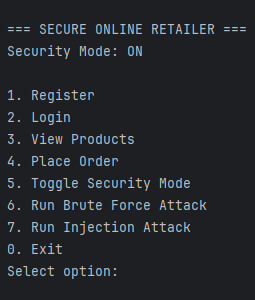
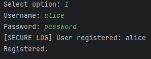
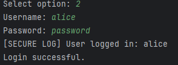
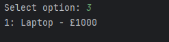
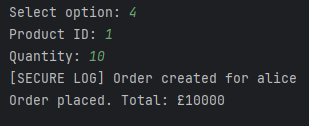
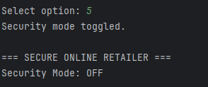
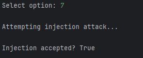
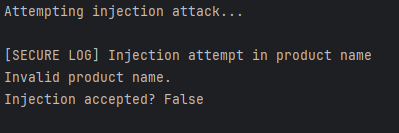
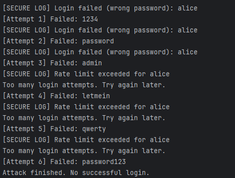

Back to ePortfolio
e-Portfolio Submission (Evaluation)
e-Portfolio Submission (Evaluation)
Link to repository for the Secure Retail System: https://github.com/floyd-t/secure-retail-system
Link to the GitHub page for the Reflective Piece (1000 words): https://floyd-t.github.io/eportfolio/SSD-e-portfolio-submission-and-reflective%20piece.html
Link to the GitHub page for the evaluation: https://floyd-t.github.io/eportfolio/SSD-evaluation.html
Introduction
This document provides supporting evidence and analysis referenced within the accompanying reflection, including system outputs, testing results and implementation details.
This e-portfolio documents the design, development and evaluation of a secure online retailer system, developed as part of the Secure Software Development module. The project aims to demonstrate the application of secure coding principles through the implementation of a command-line based application in Python, with the ability to spontaneously enable and disable security controls.
The system was initially designed collaboratively, with a focus on integrating security mechanisms such as authentication, input validation and attack mitigation into the core architecture. The final implementation was completed individually, translating the design into a functional system using object-oriented programming, the Model–View–Controller (MVC) pattern and the Strategy Pattern to modularise security behaviour.
This portfolio presents the artefacts produced throughout development, including system design, implementation and testing evidence. It also evaluates the extent to which the final system meets the original design specification and reflects on the development process, highlighting key learning outcomes and challenges encountered.
Artefacts and Development
The development of the secure online retailer system was supported by a range of artefacts produced throughout the module. The initial design phase (Unit 6) included UML diagrams such as a class diagram, sequence diagram and an activity diagram. These artefacts provided a structured representation of system components, user interactions and potential security threats, forming the foundation for implementation.
The final system (Unit 11) was developed in Python using the PyCharm integrated development environment. The codebase follows the Model–View–Controller (MVC) architecture, ensuring separation of concerns between data models, business logic and user interaction. Core components include controllers for authentication, product management and order processing, alongside models representing system entities such as users and orders.
A key feature of the implementation is the use of the Strategy Pattern to encapsulate security behaviour. The system defines both secure and insecure strategies, allowing security mechanisms such as input validation, password hashing and rate limiting to be toggled dynamically at runtime. This modular approach improves maintainability and enables direct comparison between secure and vulnerable system states.
The project is structured into logical modules, including controllers, models, security, attacks and data, ensuring clarity and scalability. Inline code comments and adherence to PEP-8 standards further enhance code readability and maintainability.
Testing and Validation
Testing played a critical role in validating both the functional and security aspects of the system. A combination of unit testing, functional testing and security testing was employed to ensure the system behaved as expected under different conditions.
The following screenshot is the “menu” of the system, in other screenshots the option number reflects an action from the menu, for example in the screenshot after “Select option: 1” represents registering an account.

Account registration, the user needs to create a username and password combo to use the system:

Logging into an account, the system remembers credentials of users during use, however due to the systems simulated nature it always starts with no details saved until the user creates an account:

Unit testing was used to verify individual components, particularly within the authentication and security modules. Tests were designed to confirm correct behaviour of password handling, ensuring that secure mode applied hashing while insecure mode retained plain text functionality. These tests helped identify inconsistencies during development, particularly in relation to shared data handling across security modes.
Viewing product lists, due to the nature of the test only one item was created, however creating more items is easy given the nature of Python’s lists:

Making an order, the system totals the value of all the items and remembers which user the order was created for:

Security testing formed a key part of the validation process. Simulated attacks were implemented to assess system resilience under both secure and insecure configurations. A brute force attack simulation demonstrated the effectiveness of rate limiting and account lockout mechanisms in secure mode, while highlighting system vulnerability when these controls were disabled. Similarly, an injection attack simulation tested input validation by attempting to introduce malicious input into the system. In secure mode, validation successfully rejected the input, whereas in insecure mode the attack was accepted, demonstrating the importance of input verification. The below screenshot is the security mode being toggled off:

In this screenshot, the injection attack succeeds because the secure mode is turned off:

Whereas in this screenshot, the attack fails because the secure mode is turned on:

In this screenshot a brute force attack fails because after 3 attempts the system will automatically block attempts to login:

Testing also revealed areas for improvement, including the need to apply validation at multiple stages of processing rather than solely at input entry points. This led to the implementation of additional validation checks within order processing, strengthening overall system security.
Code quality was further supported through adherence to PEP-8 standards and the use of development tools within PyCharm. Overall, the testing process was iterative and resulted in refining both functionality and security, ensuring the final system met the intended requirements.
Requirements and Assumptions